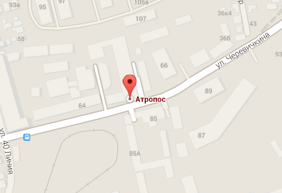
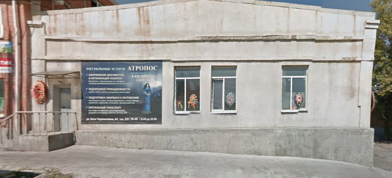
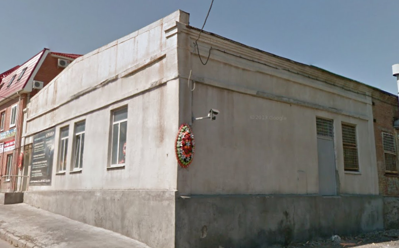

Ритуальные услуги Ростова-на-Дону
Атропос
Адрес: Ростов-на-Дону, ул. Вити Черевичкина, 64
Телефон: 8 (863) 251-76-45 (телефон магазина),
8 (863) 226 47 46 (круглосуточно),
8 (928) 768 02 34 (телефон агента)
Наши услуги
Оформление документов и организация похорон
(бесплатно - консультации по телефону и выезд квалифицированного агента на дом)
Похоронные принадлежности
(гробы, венки, кресты, ритуальные аксессуары)
Подготовка умершего к погребению
(санитарные услуги, бальзамирование, а также обряды омовения, одеяния, отпевания, прощальный зал)
Ритуальный транспорт
(все виды катафалков, транспортировка умершего по городу, области, России, СНГ, бригады похоронной обслуги)
Для оформления похорон
необходимы следующие документы:
- 1. Паспорт заявителя
- 2. Паспорт умершего
- 3. Справка о смерти
Атропос
 